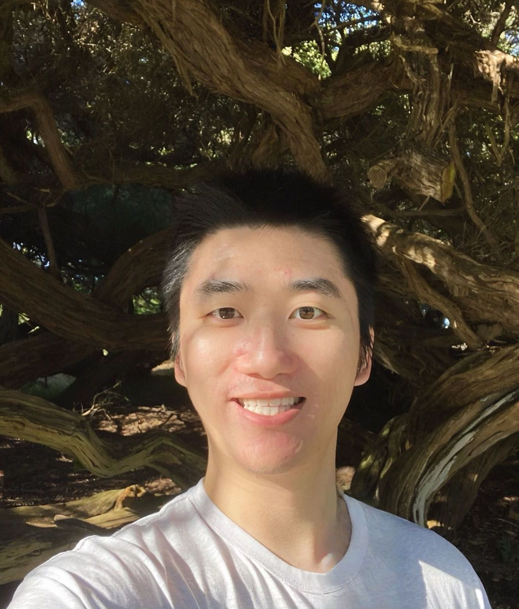

|
Yunwei Zhao
Welcome! I am a first-year Ph.D. student of
Computer
Science at NYU
Courant Institute of Mathmatics
advised by
Lakshmi Subramanian . Previously, I was an undergrad
at the University of
Washington, working with
Sheng
Wang and Richard
Anderson.
My current research interest focuses on addressing complex
reasoning tasks via 1)
building synthetic data generation pipelines, 2)
internalizing reasoning process and, 3) developing
autonomous reasoning engines. Towards these goals, I am
working on two
main problems: a. gene regulatory relationship
discovery based on highly-sparse single-cell RNA-seq data,
and
b. logic extraction and reasoning from natural language.
Email /
CV /
Github
/
Google
Scholar /
Twitter
News
|

I enjoy building AI for creation
and
interactive AI agent.
|
Current works
|
Privacy Logic Extraction and
Reasoning through Contextual Integrity-Guided Language
Models
(Joint work with Rishabh Adiga, Varun Chandrasekaran,
Lakshmi Subramanian, Thomas Wies)
Ongoing.
|
A Bayesian Framework
for Single-Cell Gene Network Discovery via Contrastive
Learning
(Joint work with Ankit Bhardwaj, Preetha Balasubramanian,
Lakshmi Subramanian)
Ongoing.
|
CSE
473: Introduction to AI, Undergraduate
Teaching Assistant in Spring 2022 and Fall 2022
NAACL 2022, Student
Volunteer
ICTD 2022, Student Volunteer
|